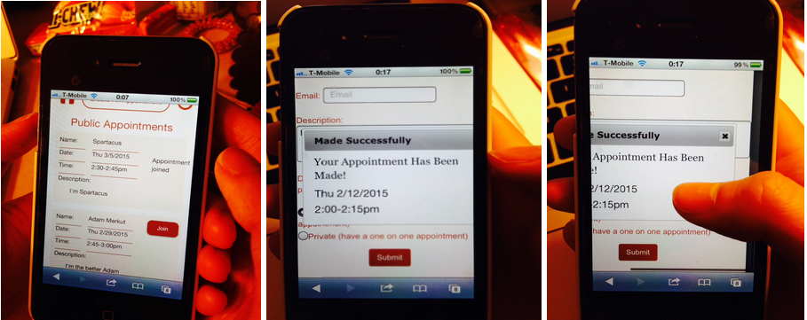
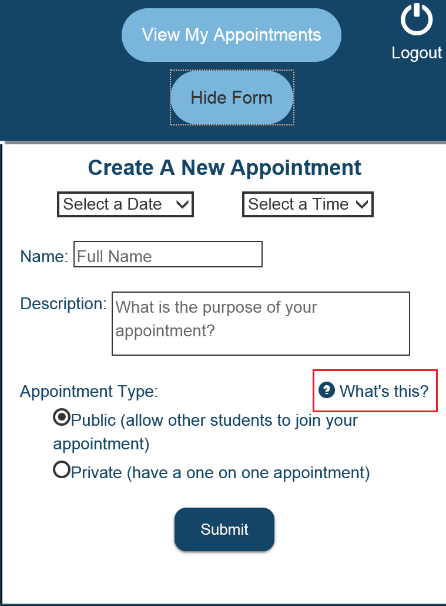
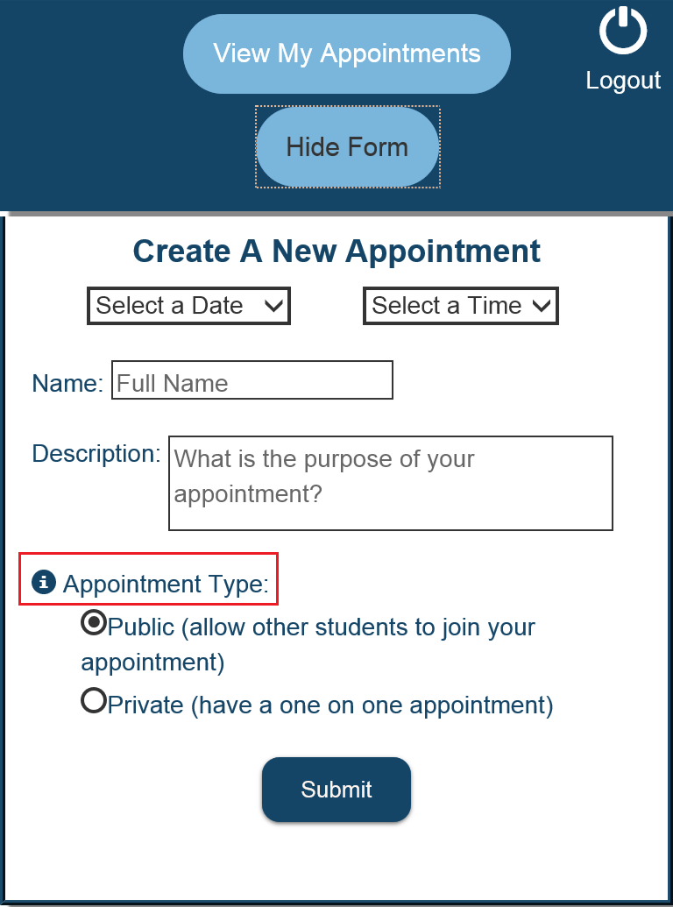

|
Storyboarding
After conducting needfinding interviews with major stakeholders and extreme users, my group and I had several breakdowns and design opportunities to work with. We used storyboarding to narrow down the options and come up with a focused point of view for our app, as well as establish our target user. |
|
Paper Prototyping
We used paper prototypes to design our interface. We referred to Nielsen's 10 Usability Heuristics to evaluate our design and ensure good usability and flow. From this, we had a list of violations that needed to be fixed, so we used severity ratings to rank the importance of each violation. |
|
User Testing
Once we had a fully functional and interactive application, we conducted user tests to evaluate the flow of our interface and the ease of use for our target users. We gathered the feedback from our tests and evaluated them in order to make the appropriate changes to improve the usability of our app.  |
|
A/B Testing
While user testing is useful for evaluating the overall product, we also needed a way to test small details. We used A/B testing to test different versions of help icons, by comparing the number of clicks on each version. The help icon was an important feature for us to have. It's useful to users who need clarification on public and private appointments, which are one of the main features of our app. Our results showed that neither version was effective, because only one of our users clicked on a help icon. We concluded from this data that the help icon wasn't noticeable enough, so in our end product, we changed the color of the button to draw more attention to it.   |